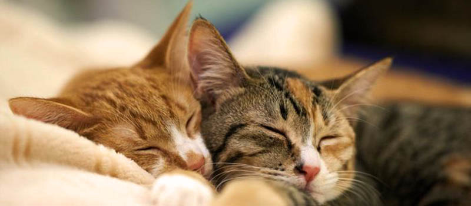

Creating My Cat's Home
From bedding and carriers to kitty litter and toys we take a look at all the equipment essentials you’ll need to care for your feline friend.
KITTY LITTER
One of the perks of having a cat is that they’re inclined by nature to ‘go’ in the same area each time. No poop-scooping missions in your backyard will be necessary. But that means you‚ll need to have a litter box for your cat.
BEDDING
Cats like to have a place to call their own for sleeping. Whatever you buy should be soft and warm. It might be as simple as a pillow, but lots of cats show a preference for nest-type beds (usually shaped somewhat like a donut).
SCRATCHING POSTS
Cats love to scratch. They need to scratch. And they WILL scratch; it's instinctive! The only question is: What will your cat scratch? The smart move is to give your cat something that it will love to scratch, and that's made for scratching.
It should be sturdy and stable. A cat can hit a post hard in a vigorous play attack, so you want to be sure that the post will remain in place and upright. A rubber base might be helpful.
TOYS
Kittens are playful critters, and playtime is an important component in their development. Cat toys are great playtime tools, and just about any purpose -built toy that your cat enjoys will be fine. Just be sure that the cat can't get any small pieces off the toy. Anything smaller than a ping-pong ball should be considered a potential choking threat.
CARRIER
Be sure to also buy a cat carrier. It's the only safe way to transport your cat, even if you don't plan any trips longer than to the nearest vet. A loose cat in a car is NOT a good thing! Again, you'll be faced with a bewildering array of choices. Just make sure that the carrier you choose is well ventilated and sturdy.